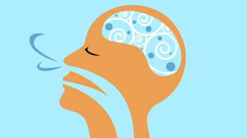
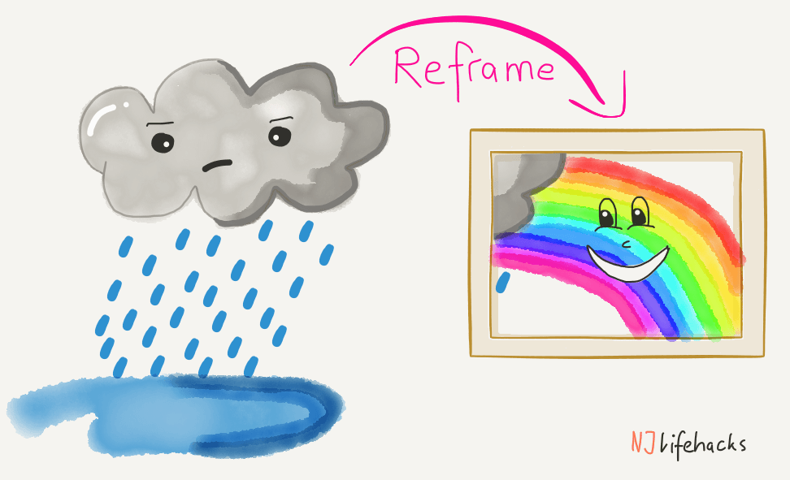
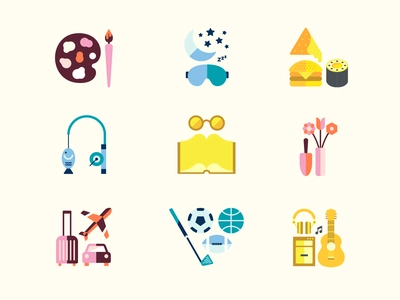
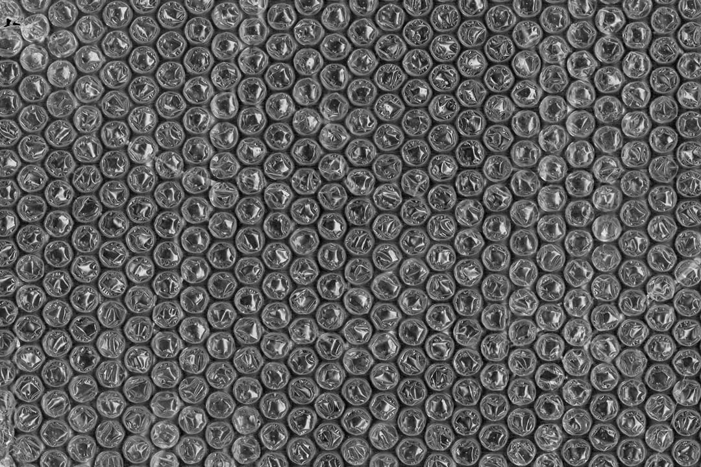

You've learnt about the symptoms of stress, and it's causes. You may feel that stress is scary but fret not! There are many way to cope with stress as shown on this page. Continue reading to learn
Practise the 7-5-6 technique to calm down
Photo: Anne Moss Rogers
- Inhale deeply for 7 seconds
- Hold breath for 5 seconds
- Exhale for 6 seconds
By doing this, oxygen flow to the brain is increased, helping to calm you down and help you not think too much about your stress. That way, you can feel more relaxed and are able to think more calmly.
Think in the opposite emotion
Photo: Corporate Learning Network
When feeling stressed out, instead of thinking of the things that are causing the stress, you can think of the positive things in life.
For example, if you feel very stressed out and want to isolate yourself from others, you can think in the opposite manner and instead, go and socialize with your friends and family. By going against your negative emotions, you're forcing yourself to not feel sad. Hence, you would eventually have be able to tackle the causes of your stress without feeling the negative impacts of stress.
Reframing your Mind
Photo: NJlifehacks!
Reframing the mind is the process of thinking about emotions and stressors (problems that cause stress)
For example, consider doing badly for a test You may think that, “Wow, my life is a disaster. Because I failed my test, I'm going to get scolded by my parents. Why does this have happen to me” However, instead of thinking in such a negative manner, you can instead reframe that thought and think in a positive manner, like “Yes, I've failed the exam, but it's not the end of the world. There is another test next term, I definitely can do very well for that. I can learn a lot from these mistakes I've made and I won't repeat them in future exams”
By thinking positively during problematic situations that causes stress, you can change your emotions. You can feel happy instead of feeling stressed out. Your brain eventually gets used to thinking positively and negative thoughts will be gone. Hence, just like the previous solution, this eventually helps to alleviate stress as you don’t mull about your problems
Doing your favourite hobbies
Photo: Dribble
Everyone has something that they love to do. By doing your favourite hobbies, you can feel happier and less stressed out. Hobbies can be:
- Listening to music
- Reading books
- Coding
- Playing sports with friends or family
- Playing musical instruments like the piano or the violin
- etc...
Engaging in hobbies releases endorphins which makes you feel happy. Thus, you'll mitigate the negative impacts of stress and calm yourself down.
Talk to your parents, best friend or any trusted person about your problems
Sometimes, we just need a person to listen to our problems. Someone who can understand us. When you're feeling stressed out, it's always good to talk to your parents. They always know what's best for you, and they'll certainly help and comfort you. Being their child, your parents are bound to understand you and rectify their mistakes if they were the ones who stressed you out.
You could also talk to your best friend. As a saying goes: A good friend know your life, but your best friend lives your life with you. Your best friend would surely be willing to know about your problems and help you out. Your best friend would definitely support you through thick and thin. After all, that's what friends are for :).
Alternatively, you can also seek help from external sources. More on this on the next page (Helplines)
Pop bubble wrap!
Photo: Indieground
As silly as this may sound, popping bubble wrap actually helps you to feel less stressed out. When you are stressed, tension builds up in your muscles, making you cranky. Now, you would certainly need to release this tension in order to feel less stressed out. That's where bubble wrap come in.
Research has found that the action of popping bubbles is similar to nervous motions like finger tapping and foot jingling. Such movements helps to move your muscles a bit, so it helps to release the tension in your muscles (yay!). In addition, the "pop" sound of the bubbles popping is also satisfying to hear. Popping bubble wrap also makes your brain receive dopamine, another feel-good chemical. Thus, you'll feel less stressed out and relaxed after popping bubble wrap. So, if you're stressed out, grab some bubble wrap and pop away.
These strategies work even better when used together with other strategies. The more strategies you use, the more effective they'll be.